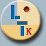
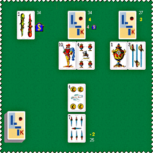

|  |
| 1649 jugadores conectados |
|
|
|
|  |
Descripción
Se trata de un juego de baraja española de 40 cartas, denominado indistintamente siete y medio o siete y media.
No existe un número específico de jugadores que deban participar en el siete y medio, a partir de los 2 jugadores, aunque es recomendable que no se supere el número de 8 jugadores.
En la versión que aquí se ofrece el número de jugadores puede ser 4, 5 o 6.
Objetivo del juego
Es un juego de apuestas, generalmente con pequeñas cantidades de dinero. El objetivo es simplemente el de intentar ganar las apuestas planteadas en cada mano. La finalización de la partida depende de la decisión de cada jugador de continuar en la misma, ya que la partida en si misma no tiene un final definido.
En cada una de las manos o apuestas cada jugador compite contra la banca; el objetivo es intentar sumar siete y medio o el número más cercano posible, sin sobrepasar dicha cantidad.
Valor de las cartas
A los efectos de sumar cada jugador los deseados siete y medio, cada carta tiene, indistintamente de su palo, el valor que indica su propio índice, salvo las doce figuras (sotas, caballos y reyes) que tienen un valor de medio punto.
Desarrollo del juego
Comienzo de la partida y de cada una de las manos
Por sorteo se decide quién es el jugador que comenzará teniendo la banca, que será quien reparte. La banca reparte una carta a cada uno de los jugadores, incluyéndose a sí misma.
La apuesta del jugador
Por turnos, de derecha a izquierda, empezando por el jugador situado a la derecha de la banca, cada jugador realiza dos acciones:
- En primer lugar debe hacer su apuesta, generalmente dentro de un rango previamente fijado.
- Seguidamente debe decidir si desea recibir más cartas del mazo. Si no lo desea debe indicarlo diciendo que se planta. Si por el contrario, desea cartas para intentar acercarse lo más posible a sumar siete y medio, podrá pedir todas las que quiera de una en una pudiéndose plantar cuando quiera.
El jugador que está recibiendo cartas podrá mantener sobre la mesa una única carta boca abajo, manteniendo así siempre su jugada en secreto. Por lo tanto, cada vez que pide una nueva carta, debe decidir entre estas dos opciones:
1. Pedir la carta boca arriba.
2. Pedir la carta boca abajo, en cuyo caso debe colocar boca arriba la carta que tuviera oculta anteriormente.
Si en su turno un jugador se pasase del siete y medio, debe mostrar todas sus cartas y pierde inmediatamente su apuesta.
Juega la banca
Una vez hayan hecho las apuestas todos los jugadores, le llega el turno a la banca. Si quedara algún jugador que no se hubiese pasado de siete y medio, y por lo tanto está todavía en condiciones de poder ganar su apuesta, la banca procederá a su vez a jugar.
La banca no hace apuestas, simplemente recibe las de los jugadores, y juega como los demás jugadores, plantándose (si cree que así gana a todos o algunos de los jugadores que quedan) o dándose cartas, de una en una, pero con todas sus cartas boca arriba hasta decidir plantarse.
Cobrar las apuestas
La banca juega contra todos y cada uno de los jugadores, y por lo tanto si ella se ha pasado, deberá pagar a todos aquellos jugadores que se hubieran plantado.
Si la banca se ha plantado comprueba con cada jugador su jugada para ver a quién vence y con quien pierde. En cada apuesta vence quien más se acerque a siete y medio. En caso de empate gana la banca; por lo tanto, si la banca tiene siete y medio gana automáticamente a todos los jugadores.
La banca debe pagar la cantidad apostada, a cada jugador con el que pierda, y a la inversa, cada jugador que pierda con la banca debe pagarle a ésta lo apostado.
Si un jugador tiene siete y medio (y la banca no) cobra el doble de lo apostado y además toma la banca en la mano siguiente.
Compra de la banca
Antes de empezar cada mano, cada jugador podrá hacer una oferta de compra por la banca a quien la tuviera en ese momento. En caso de que se aceptara, la banca pasa al jugador que hizo la oferta.
Particularidades en Ludoteka
Dado que en Ludoteka no se apuesta dinero ni ninguna moneda virtual que lo sustituya y siguiendo el mismo esquema que en todos los demás juegos ofrecidos, de partidas con principio y final determinados, se ha realizado una adaptación del juego para que las partidas sí tengan en sí mismo un objetivo concreto.
- Los jugadores comienzan la partida con un número de puntos fijo que irán apostando, dependiendo del número de jugadores y máxmimo de manos a jugar: al jugar a 15 manos, 25, 22 ó 20 puntos según sean 4, 5 ó 6 jugadores; y al jugar a 30 manos, 30, 27 ó 25 puntos.
- El jugador que pierde sus puntos queda eliminado de la partida.
- La partida continúa hasta que un único jugador se hace con todos los puntos en juego, quedando los demás eliminados, o bien hasta que se disputa el máximo de manos fijadas para la partida, que puede ser 15 ó 30, en cuyo caso el vencedor es quien acumula mayor cantidad de puntos al final de la partida.
- La cantidad de puntos a apostar en cada mano se escoge entre 4 posibilidades, con valores que se van incrementando paulatinamente a medida que se desarrolla el juego. En las primeras manos las apuestas posibles oscilan entre 2 y 5, y suben hasta un rango entre 6 y 12 puntos cuando el número de manos ya se acerca al máximo de 15 ó 30.
- Cuando el jugador que posee la banca es eliminado, ésta pasa al jugador que en la mano correspondiente haya obtenido la mejor jugada.
Compra de la banca en Ludoteka
Los jugadores pueden comprar la banca. El sistema de compraventa es el siguiente:
Cada jugador indica la cantidad de puntos que está dispuesto a ofrecer, en caso de estar interesado en la compra, inmediatamente después de indicar su apuesta y antes de realizar su jugada.
El jugador que realiza una oferta por la banca debe superar la oferta anterior realizada en la misma mano, si la hubiese. Como máximo puede pujar ofreciendo la mitad de los puntos que le quedarían en caso de perder su apuesta.
En caso de haberse realizado alguna oferta, al finalizar la mano ésta se traslada a la banca, que simplemente debe aceptarla o rechazarla. Excepcionalmente, cuando un jugador logra siete y medio o cuando la banca queda eliminada, y por lo tanto la banca cambia de jugador, las ofertas quedan anuladas.
Jugar en Ludoteka
Jugar online con otros jugadores
Jugar en solitario: Siete y medio
Recursos relacionados
Copyright � 2001-2012 Ludoteka.com Jokosare S.L. Todos los derechos reservados - Aviso legal